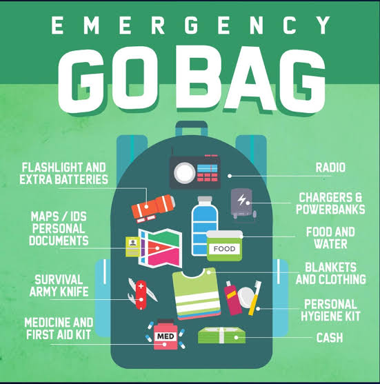

Skills & Safety • Philippines
Backpacking Checklist
Bring water, food, weather-appropriate clothing, a first-aid kit, flashlight, map, charged phone, power bank, emergency contacts, and required permits. Adjust supplies to the trip.
Essential Gear
- Water bottles and enough drinking water.
- Snacks and meals appropriate for the trip.
- Weather-appropriate clothing and extra socks.
- Comfortable hiking shoes or footwear.
- Backpack with rain cover.
- Flashlight or headlamp with extra batteries.
- First-aid kit and personal medications.
- Map, compass, or offline navigation app.
- Fully charged phone and power bank.
- Emergency contact information.
- Required permits and identification.
- Raincoat or waterproof clothing.
- Trash bags for carrying waste home.
Helpful reminders
- Check official park announcements and local weather before visiting.
- Follow posted rules and instructions from park staff or guides.
- Respect nature and local communities; take all trash with you.
- Tell someone your itinerary and expected return time.
- Check your equipment before leaving.
- Adjust supplies according to trail conditions and trip duration.